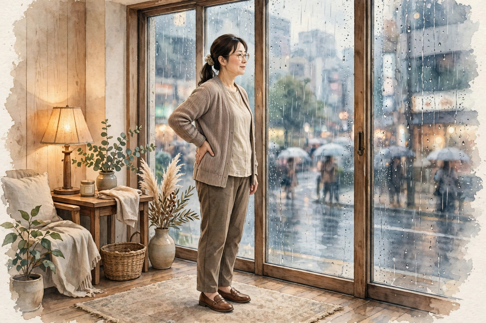

梅田で雨の日に気になる腰の重さ｜低気圧の日の過ごし方とセルフケア、受診の目安ハウツー

梅田で働く・暮らす方へ。季節の変わり目に「目がしょぼしょぼして、夕方になるとピントが合いにくい気がする」「目の奥が重くて、朝と夕方で感じ方が違う気がする」「いつもの季節より目もとが乾いて気になる」と感じる目の疲れ感について、一般的な解説と考えられる要因の整理、季節の節目の過ごし方とセルフケア、医療機関への受診の目安をまとめました。一般的な健康情報としてお読みください。
#梅田 雨の日 腰の重さ#雨の日 腰 重だるい#低気圧 腰の重さ#腰の重さ セルフケア 雨の日#梅田 女性専用 サロン 腰 雨
雨の日に気になる腰の重さとは（一般的な解説）
腰の重さとは、病名ではなく、「腰が重だるい」「立ち上がるときに腰まわりが伸びにくい」「腰に重さがたまったように感じる」と感じる感覚を表す言葉として使われることがあります。雨の日に気になる場合は、晴れた日は気にならないのに、雨の降る日や天気が崩れる前日から腰まわりが重く感じる、朝は平気でも傘や荷物を抱えて歩いた日の夕方に気づく、といった形で感じる方が多いとされます。「天気予報で雨マークを見た朝から、なんとなく腰が重い気がする」「梅田の地下街を長く歩いた雨の日は、帰宅後に腰へ重さが残る気がする」と感じる変化を口にする方もいます。感じ方には個人差が大きく、雨量や気圧の下がり方、その日の歩き方や眠りの様子によっても変わるとされます。
大切なのは、「晴れた日と比べてどうか」「どんな雨の日に気になりやすいか」という視点です。気圧が大きく下がった日なのか、雨の中を長く歩いた日なのか、冷たい雨で体が冷えた日なのか、眠りが浅かった日の翌日なのか——気になりやすい場面を、天気と一緒に簡単に記録しておくと、自分の傾向がつかみやすくなります。この記事では、雨の日に気になる腰の重さの一般的な解説と、背景として考えられる要因の整理からお伝えします。なお、重さの感じ方だけで体の状態を判断することはできません。気になる変化が続く場合は、後半の「受診の目安」もあわせてご確認ください。
考えられる要因の整理
1つ目は、気圧の変化と、体の切り替えの負担です。雨の日は低気圧が近づくタイミングと重なりやすく、体が外の変化に合わせようと働く中で、オンとオフの切り替えがゆらぎやすくなるとされます。その感じ方のひとつとして、腰まわりの重だるさを自覚する方がいると考えられます。ただし、感じ方には個人差があり、「低気圧のせい」と一言で決めつけられるものではありません。
2つ目は、雨の日ならではの姿勢や荷物、足元への気遣いです。傘を差しながら荷物を持つ、濡れた路面で滑らないよう小さな歩幅で歩く、水たまりを避けてうつむき気味に歩く——こうした雨の日特有の動きが重なると、腰やお尻、股関節まわりが緊張しやすくなり、その緊張が腰の重さとして感じられる背景のひとつとされます。雨で濡れた衣服や、除湿や冷房のきいた室内との行き来で腰まわりが冷えることも、重さを感じやすくする要素として挙げられます。ただし、感じ方には個人差があり、「雨の日の歩き方が原因」と決めつけられるものではありません。
3つ目は、活動量の変化や睡眠、生活リズムとの関わりです。雨の日は外出や歩行の機会が減り、座ったまま過ごす時間が長くなりがちです。腰まわりを動かす機会が少ない日が続くと、立ち上がったときに重さを感じやすい、という声も聞かれます。日差しが少なく朝の目覚めがすっきりしにくい日や、予定の変更で一日のリズムがずれた日と重なることもあります。東洋医学では、腰は生命力の土台とされる「腎（じん）」と関わりが深い部位とされ、湿気の多い時期の重だるさは「水の巡り」の滞りと重ねて捉えられてきた歴史があります。背中から腰、脚の後ろ側を流れる膀胱経や、腰を帯のように巡る帯脈のエリアともあわせて考えられてきました。要因はひとつではなく、その日の天候や歩き方、眠りの様子によって組み合わせが変わるため、思い当たるものをひとつずつ見直すことが大切です。
低気圧の日の過ごし方とセルフケア
まずは「その日の予定と姿勢を区切る」ことです。天気予報で雨や気圧の下がりが予想される日は、移動時間を長めに見積もる、大切な予定の前後に余裕を持たせるなど、過ごし方そのものをゆるめる工夫が取り入れやすい方法です。傘や荷物はできるだけ両手に分ける、濡れた路面では歩幅を小さくして急がない、といった雨の日の歩き方の工夫も挙げられます。仕事や家事で座りっぱなし・立ちっぱなしが続いたら、一度立って少し歩く、腰まわりを小さく動かすなど、同じ姿勢のまま過ごす時間を短くしてみてください。痛みを感じるほど強く伸ばす必要はありません。
次に「温めて、軽く動かす」ことです。帰宅後に湯船につかって腰まわりまで温める、蒸しタオルを腰に当てる、といった方法は、冷えてこわばった部位をいたわる基本とされます。腹巻きなどでお腹や腰を冷やさない工夫も、冷えを感じやすい方には取り入れやすいものです。貼るタイプの温熱用品を使う場合は、低温やけどに十分注意し、使い方の表示を確認してください。あわせて、立った姿勢で体側をゆっくり伸ばす動きや、腰まわり・股関節まわりを無理のない範囲で動かすストレッチも、仕事や家事の合間に取り入れやすいものです。強く倒したり、痛みを感じるほど伸ばしたりする必要はありません。
あわせて、水分をこまめに取ること、温かい飲み物を一日のどこかに挟むこと、就寝・起床の時刻を大きくずらさないことも、雨の日の体調管理の基本とされます。ただし、セルフケアはあくまで日常の重さへの対処です。特定の方法に頼りすぎたり、気になる状態を我慢して様子を見続けたりしないようにしてください。重さが強い日は、ケアよりもまず体を休めることを優先することも大切です。
受診の目安｜こんなときは医療機関へ
雨の日の腰の重さの多くは、気圧の変化や雨の日の姿勢、活動量や睡眠といった日常の要素が重なって感じられるとされますが、中には医療機関での確認を優先したいサインもあります。「脚のしびれや、力が入りにくい感じを伴う」「安静にしていても強い痛みが続く、痛みが少しずつ強くなっている」「発熱を伴う」「転んだりぶつけたりしたあとから気になり始めた」「排尿や排便のしづらさを伴う」「雨の日以外でも重さや痛みが続く日が増えてきた」「日常生活や仕事、家事に支障が出るほどつらい状態が続いている」といった場合は、セルフケアで様子を見続けず、整形外科など医療機関への受診をおすすめします。
また、腰の重さや痛みの背景には、検査で初めて分かる要素が関係していることもあるため、気になる状態が続く場合は一度相談してみてください。当店のケアはリラクゼーションを目的としたボディケアで、腰の状態や病気を診断したり、それらに対応したりするものではありません。医療機関での確認を優先したうえで、日常のケアの選択肢のひとつとしてご利用ください。
当店でのケアとサロンのご案内
ステラポラリスは、大阪・梅田エリアのレンタルサロンで施術する女性専用・完全予約制のサロンです。営業は月〜土17:00〜22:00（日曜休み）で、仕事帰りや家事を終えたあとの時間帯にも合わせやすい設定です。施術はオイルマッサージと美容整体、料金は90分10,000円です。ご予約はLINE公式アカウント「ポラリス美容整体院」で受付中です。場所は大阪市北区堂山町12-5 ロイヤルハイツ梅田Ⅱ 303号室（レンタルサロンACE内）、中崎町駅から徒歩5分・阪急梅田駅から徒歩8分です。入室方法の詳細はご予約確定後にLINEでご案内します。
施術では、その日の体調や気になる部位をうかがい、腰・背中からお尻・脚を含めた全身を順にほぐしながら、巡りを意識したケアを組み立てます。美容整体では、姿勢の土台となる骨盤まわりや股関節まわりのケアを組み合わせることもできますので、ご希望があればお伝えください。雨の日で体が重く感じられる日は、静かに休む時間を大切にする進め方も選べますので、遠慮なくお伝えください。担当は施術歴30年・鍼灸師資格を持つセラピスト1名で、当店では鍼灸施術は行いません。関連するお悩みページ「腰の重だるさ」「自律神経の乱れ感」や、経絡ページ「膀胱経」「腎経」でも、体の見方やケアの考え方を紹介していますので、あわせてご覧ください。料金や営業時間の詳細は、メニュー・料金ページでもご確認いただけます。